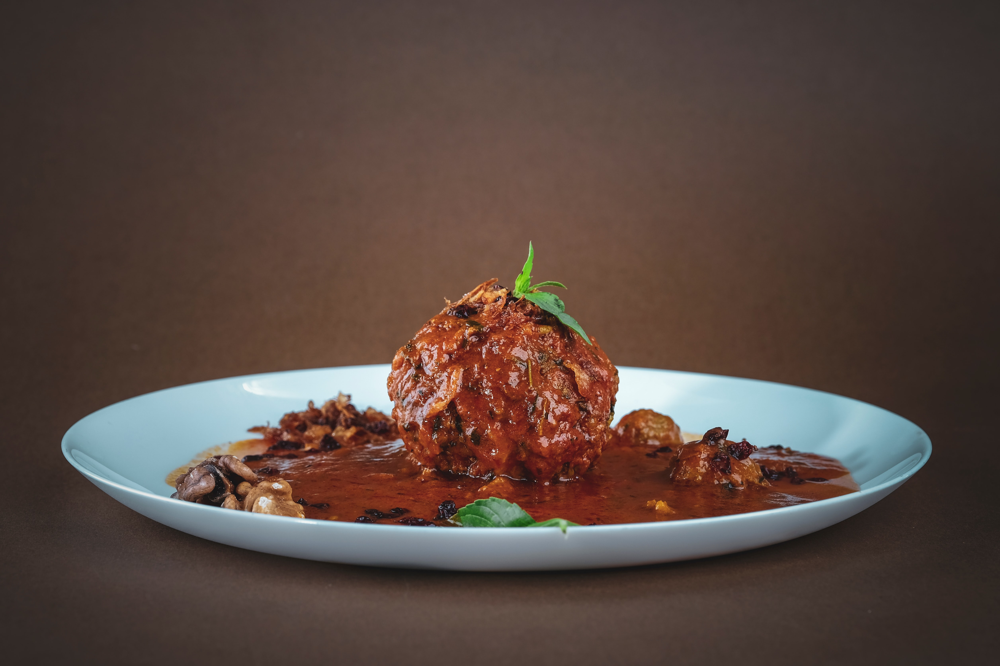

Easy Instant Pot® Cocktail Meatballs
A twist on the grape jelly cocktail meatballs that everybody loves. This recipe uses apricot preserves, but feel free to use grape, orange marmalade, or even cranberry sauce - they're all delicious! Try different flavors of barbecue sauce too! These make the perfect party appetizer, especially when you're low on time!